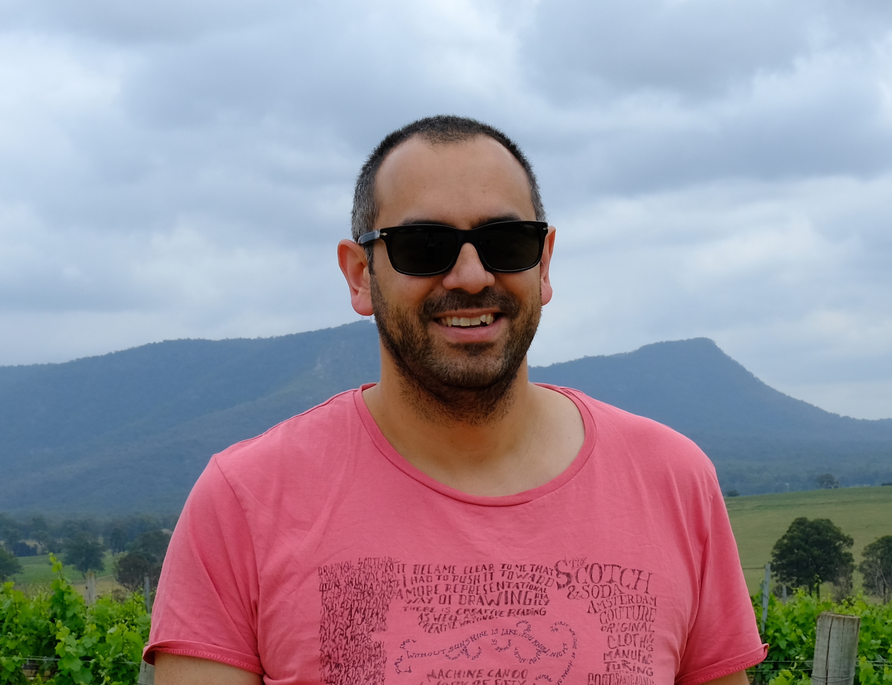
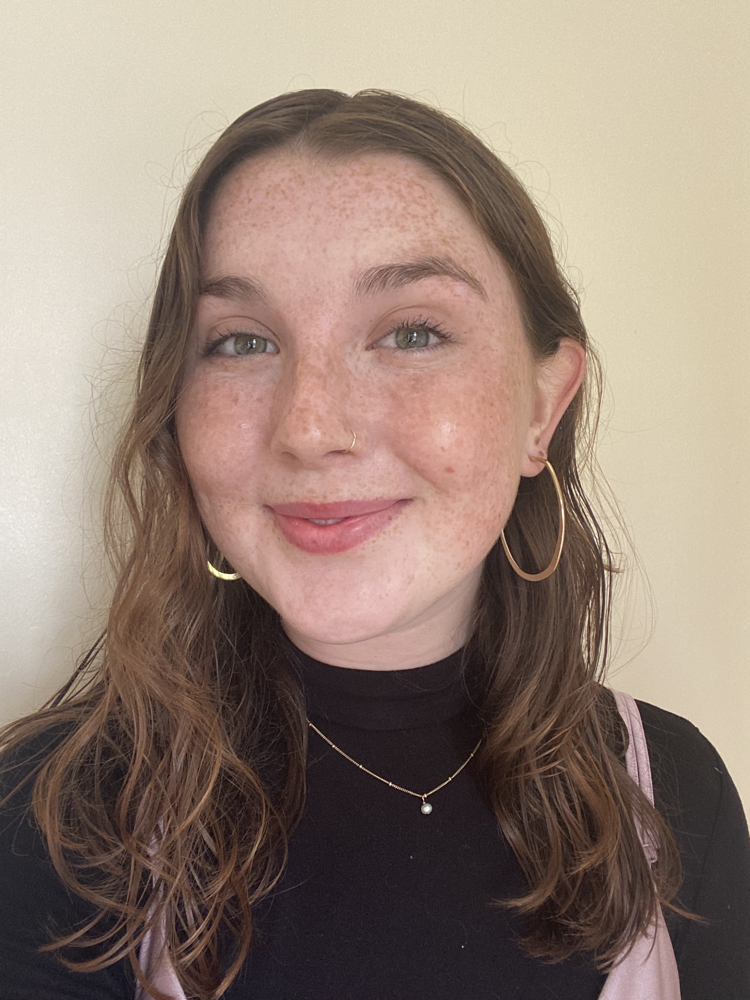
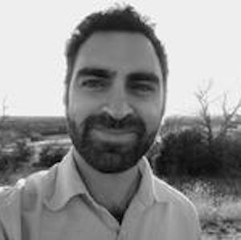
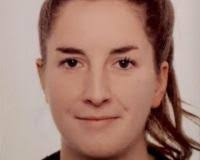
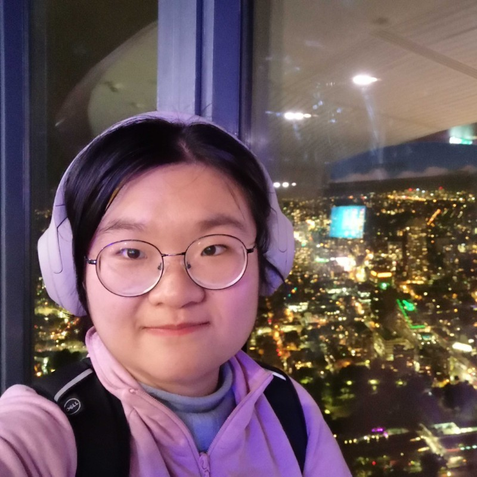
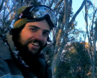

Martin De Kauwe is an Associate Professor of Global Change Ecology at the University of Bristol. Martin’s research group will continue to be split between Bristol and Sydney for the next few years.
Martin is an Associate Editor of Biogeosciences and a member of the Editorial Advisory Board for Global Change Biology and New Phytologist. Martin is the former co-chair of the leadership committee for the CABLE land surface model. Martin is also a member of the Scientific Steering Committee for the AmazonFACE experiment.
Research Positions
2021–present: Associate Professor, School of Biological Sciences, University of Bristol, England.
2017–2021: Senior Lecturer, Climate Change Research Centre, University of New South Wales, Australia.
2010–2017: Research Fellow, Department of Biological Sciences, Macquarie University, Australia.
2008–2010: Earth Observation and Land Surface Modeller, Centre for Ecology and Hydrology, England.
Education
2009: PhD in Remote Sensing, University College London, UK. Title: “Estimating terrestrial carbon fluxes through an optimal combination of models and Earth Observation data” . Supervised by Professors Philip Lewis, Mat Disney and Mathew Williams.
2004: MSc in Environmental Monitoring, Modelling and Management, Kings College London, UK.
2003: BSc in Geography, Kings College London, UK.

Grace Isacc is an MRes student at the University of Bristol.
Grace is exploring the drivers of the rapid hydraulic collapse of conifer trees during a record-breaking sumer drought in Switzerland, 2018.

Ellie Nichols is an MSc student at the University of Bristol.
Ellie is examining the links between traits that describe plant water relations and climate.

Sami Rifai is a Postdoctoral Researcher at the University of New South Wales.
Sami is working on the ARC grant exploring how vulnerable eucalypts are to future droughts.
Jonathan Page is a PhD student at the University of New South Wales.
Thesis: Lags and legacies: understanding the role of antecedent effects on grassland biomass responses to rising CO2

Melika Missen is a PhD student at the University of Tasmania.
Thesis: Will rising CO2 concentrations save plants from drought stress?

Lina Teckentrup is a PhD student at the University of New South Wales.
Thesis: The response of terrestrial ecosystems to different climate modes

Mengyuan Mu is a PhD student at the University of New South Wales.
Thesis: How important is groundwater to the resilience of vegetation during drought?

Manon Sabot is a PhD student at the University of New South Wales.
Thesis: Trading water for carbon: exploring optimality theory to improve model predictions of vegetation function during drought
Alumni
Jinyan (Jim) Yang was a PhD student at Western Sydney University.
Thesis: Modelling the carbon uptake of Australian evergreen ecosystems under rising [CO2] and water limitations
Jim is now working as a Postdoc at Western Sydney University

Ned Haughton was a PhD student at the University of New South Wales.
Thesis: On the predictability of land surface fluxes
Ned is now working as a risk analyst at Climate Risk